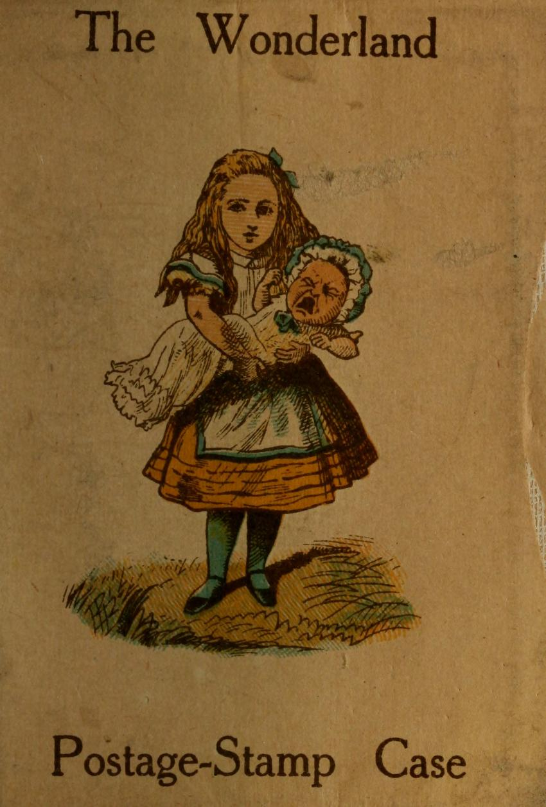
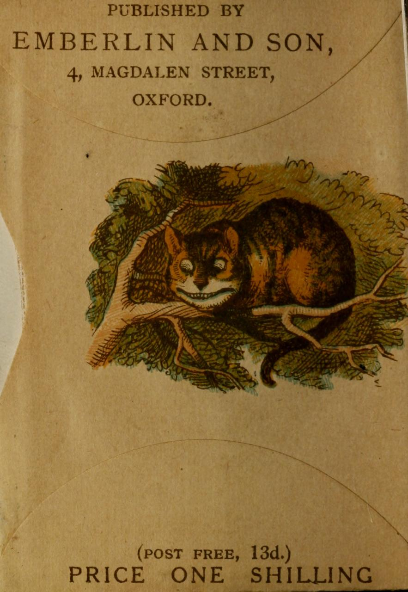
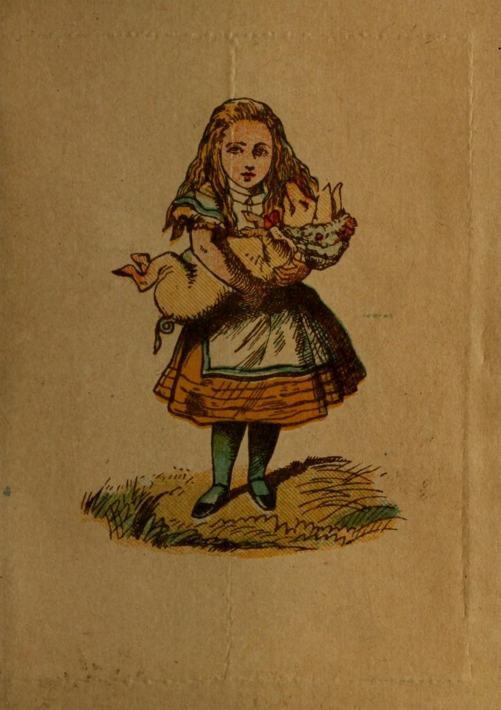
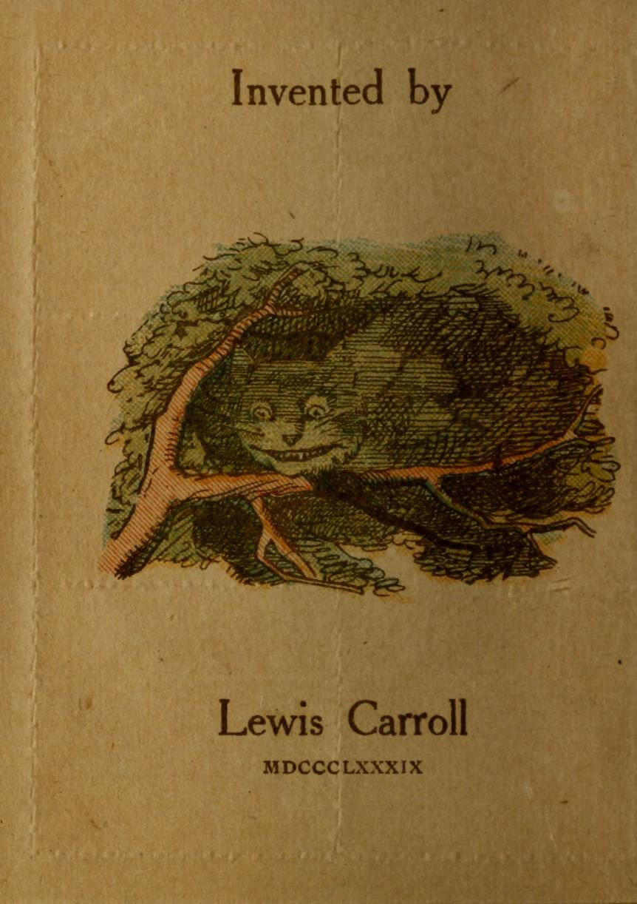
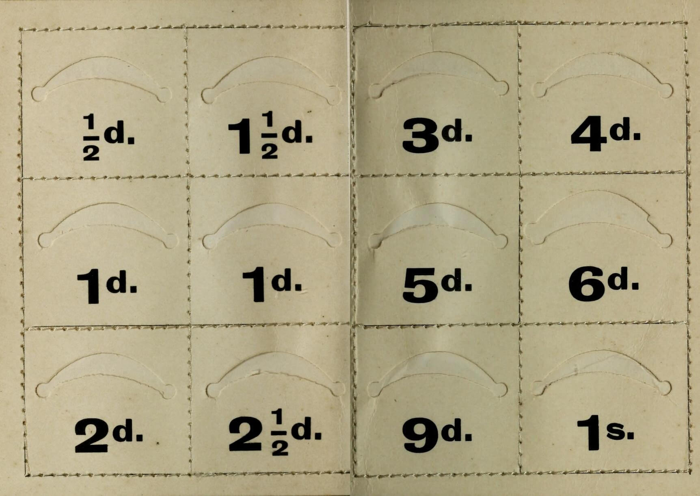

§ 1. On Stamp-Cases
Some American writer has said “the snakes in this district may be divided into one species—the venomous.” The same principle applies here. Postage-Stamp-Cases may be divided into one species, the “Wonderland.” The title is entered at Stationers’ Hall: the two Pictorial Surprises, and the ‘Wise Words,’ are copyright.
You don’t see why I call them ‘Surprises’? Well, take the Case in your left-hand, and regard it attentively. You see Alice nursing the Duchess’s Baby? (An entirely new combination, by the way: it doesn’t occur in the book.) Now, with your right thumb and forefinger, lay hold of the little book, and suddenly pull it out. The Baby has turned into a Pig! If that doesn’t surprise you, why, I suppose you wouldn’t be surprised if your own Mother-in-law suddenly turned into a Gyroscope!
This Case is not intended to carry about in your pocket. Far from it. People seldom want any other Stamps, on an emergency, than Penny-Stamps for Letters, Sixpenny-Stamps for Telegrams, and a bit of Stamp-edging for cut fingers (it makes capital sticking-plaster, and will stand three or four washings, cautiously conducted): and all these are easily carried in a purse or pocket-book. No, this is meant to haunt your envelope-case, or wherever you keep your writing-materials. What made me invent it was the constantly wanting Stamps of other values, for foreign Letters, Parcel Post, &c., and finding it very bothersome to get at the kind I wanted in a hurry. Since I have possessed a “Wonderland Stamp Case”, Life has been bright and peaceful, and I have used no other. I believe the Queen’s laundress uses no other.
Each of the pockets will hold 6 stamps, comfortably. I would recommend you to put them in, one by one, in the form of a bouquet making them lean to the right and to the left alternately: thus there will always be a free corner to get hold of, so as to take them out, quickly and easily, one by one: otherwise you will find them apt to come out two or three at a time.
According to my experience, the 5d., 9d., and 1s. Stamps are hardly ever wanted, though I have constantly to replenish all the other pockets. If your experience agrees with mine, you may find it convenient to keep only a couple (say) of each of these 3 kinds, in the 1s. pocket, and to fill the other 2 pockets with extra 1d. stamps.
§ 2. How to begin a Letter
If the Letter is to be in answer to another, begin by getting out that other letter and reading it through, in order to refresh your memory, as to what it is you have to answer, and as to your correspondent’s present address (otherwise you will be sending your letter to his regular address in London, though he has been careful in writing to give you his Torquay address in full).
Next, Address and Stamp the Envelope. “What! Before writing the Letter?” Most certainly. And I’ll tell you what will happen if you don’t. You will go on writing till the last moment, and, just in the middle of the last sentence, you will become aware that ‘time’s up!’ Then comes the hurried wind-up—the wildly-scrawled signature—the hastily-fastened envelope, which comes open in the post—the address, a mere hieroglyphic—the horrible discovery that you’ve forgotten to replenish your Stamp-Case—the frantic appeal, to every one in the house, to lend you a Stamp—the headlong rush to the Post Office, arriving, hot and gasping, just after the box has closed—and finally, a week afterwards, the return of the Letter, from the Dead-Letter Office, marked “address illegible”!
Do not, however, in your anxiety to observe this rule, commit the error of addressing two Envelopes at once! The inevitable result of that would be that the Letters would get into wrong Envelopes, and if (as is most probable) one was a Letter of congratulation, and the other of condolence, the out-come of your morning’s work would be to turn two of your best and oldest friends into bitter enemies for life! Verb. sap. sat.
Next, put your own address, in full, at the top of the note-sheet. It is an aggravating thing—I speak from bitter experience—when a friend, staying at some new address, heads his letter “Dover,” simply, assuming that you can get the rest of the address from his previous letter, which of course you have destroyed.
Next, put the date in full. It is another aggravating thing, when you wish, years afterwards, to arrange a series of letters, to find them dated “Feb. 17”, “Aug. 2”, without any year to guide you as to which comes first. And never, never, dear Madam (N.B. this remark is addressed to ladies only: no man would ever do such a thing), put “Wednesday”, simply, as the date!
“That way madness lies.”
§ 3. How to go on with a Letter
Here is a golden Rule to begin with. Write legibly. The average temper of the human race would be perceptibly sweetened, if everybody obeyed this Rule! A great deal of the bad writing in the world comes simply from writing too quickly. Of course you reply, “I do it to save time”. A very good object, no doubt: but what right have you to do it at your friend’s expense? Isn’t his time as valuable as yours? Years ago, I used to receive letters from a friend—and very interesting letters too—written in one of the most atrocious hands ever invented. It generally took me about a week to read one of his letters! I used to carry it about in my pocket, and take it out at leisure times, to puzzle over the riddles which composed it—holding it in different positions, and at different distances, till at last the meaning of some hopeless scrawl would flash upon me, when I at once wrote down the English under it; and, when several had been thus guessed, the context would help with the others, till at last the whole series of hieroglyphics was deciphered. If all one’s friends wrote like that, Life would be entirely spent in reading their letters!
This Rule applies, specially, to names of people or places—and most specially to foreign names. I got a letter once, containing some Russian names, written in the same hasty scramble in which people often write “yours sincerely”. The context, of course, didn’t help in the least: and one spelling was just as likely as another, so far as I knew: it was necessary to write and tell my friend that I couldn’t read any of them!
My second Rule is, don’t fill more than a page and a half with apologies for not having written sooner!
The best subject, to begin with, is your friend’s last letter. Write with the letter open before you. Answer his questions, and make any remarks his letter suggests. Then go on to what you want to say yourself. This arrangement is more courteous, and pleasanter for the reader, than to fill the letter with your own invaluable remarks, and then hastily answer your friend’s questions in a postscript. Your friend is much more likey to enjoy your wit, after his own anxiety for information has been satisfied.
In referring to anything your friend has said in his letter, it is best to quote the exact words, and not to give a summary of them in your words. You know, yourself, how aggravating it is to have ‘words put into your mouth’—so to speak—which you have neither said nor meant to say.
This caution is specially necessary when some point has arisen as to which the two correspondents do not quite agree. There ought to be no opening for such writing as “You have quite misunderstood my letter. I never said so-and-so, &c. &c.”, which tends to make a correspondence last for a lifetime.
A few more Rules may fitly be given here, for correspondence that has unfortunately become controversial.
One is, don’t repeat yourself. When once you have said your say, fully and clearly, on a certain point, and have failed to convince your friend, drop that subject: to repeat your arguments, all over again, will simply lead to his doing the same; and so you will go on, like a Circulating Decimal. Did you ever know a Circulating Decimal come to an end?
Another Rule is, when you have written a letter that you feel may possibly irritate your friend, however necessary you may have felt it to so express yourself, put it aside till the next day. Then read it over again, and fancy it addressed to yourself. This will often lead to your writing it all over again, taking out a lot of the vinegar and pepper, and putting in honey instead, and thus making a much more palatable dish of it! If, when you have done your best to write inoffensively, you still feel that it will probably lead to further controversy, keep a copy of it. There is very little use, months afterwards, in pleading “I am almost sure I never expressed myself as you say: to the best of my recollection I said so-and-so”. Far better to be able to write “I did not express myself so: these are the words I used.”
My fifth Rule is, if your friend makes a severe remark, either leave it unnoticed, or make your reply distinctly less severe: and if he makes a friendly remark, tending towards ‘making up’ the little difference that has arisen between you, let your reply be distinctly more friendly. If, in picking a quarrel, each party declined to go more than three-eighths of the way, and if, in making friends, each was ready to go five-eighths of the way—why, there would be more reconciliations than quarrels! Which is like the Irishman’s remonstrance to his gad-about daughter—”Shure, you’re always goin’ out! You go out three times, for wanst that you come in!”
My sixth Rule (and my last remark about controversial correspondence) is, don’t try to have the last word! How many a controversy would be nipped in the bud, if each was anxious to let the other have the last word! Never mind how telling a rejoinder you leave unuttered: never mind your friend’s supposing that you are silent from lack of anything to say: let the thing drop, as soon as it is possible without discourtesy: remember ‘speech is silvern, but silence is golden’! (N.B.—If you are a gentleman, and your friend is a lady, this Rule is superfluous: you wo’n’t get the last word!)
My seventh Rule is, if it should ever occur to you to write, jestingly, in dispraise of your friend, be sure you exaggerate enough to make the jesting obvious: a word spoken in jest, but taken as earnest, may lead to very serious consequences. I have known it to lead to the breaking-off of a friendship. Suppose, for instance, you wish to remind your friend of a sovereign you have lent him, which he has forgotten to repay—you might quite mean the words “I mention it, as you seem to have a conveniently bad memory for debts”, in jest: yet there would be nothing to wonder at if he took offence at that way of putting it. But, suppose you wrote “Long observation of your career, as a pickpocket, has convinced me that my one only hope, for recovering that sovereign I lent you, is to say ‘Pay up, or I’ll summons yer!’” he would indeed be a matter-of-fact friend if he took that as seriously meant!
My eighth Rule. When you say, in your letter, “I enclose £5 bank-note,” or “I enclose John’s letter for you to see”, get the document referred to—and put it into the envelope. Otherwise, you are pretty certain to find it lying about, after the Post has gone!
My ninth Rule. When you get to the end of a note-sheet, and find you have more to say, take another piece of paper—a whole sheet, or a scrap, as the case may demand: but whatever you do, don’t cross! Remember the old proverb ‘Cross-writing makes cross reading’. “The old proverb?” you say, enquiringly. “How old?” Well, not so very ancient, I must confess. In fact, I’m afraid I invented it while writing this paragraph! Still, you know, ‘old’ is a comparative term. I think you would be quite justified in addressing a chicken, just of of the shell, as “Old boy!”, when compared with another chicken, that was only half-out!
If doubtful whether to end with ‘yours faithfully’, or ‘yours truly’, or ‘your most truly’, &c. (there are at least a dozen varieties, before you reach ‘yours affectionately’), refer to your correspondent’s last letter, and make your winding-up at least as friendly as his: in fact, even if a shade more friendly, it will do no harm!
A Postscript is a very useful invention: but it is not meant (as so many ladies suppose) to contain the real gist of the letter: it serves rather to throw into the shade any little matter we do not wish to make a fuss about. For example, your friend had promised to execute a commission for you in town, but forgot it, thereby putting you to great inconvenience: and he now writes to apologize for his negligence. It would be cruel, and needlessly crushing, to make it the main subject of your reply. How much more gracefully it comes in thus! “P.S. Don’t distress yourself any more about having omitted that little matter in town. I wo’n’t deny that it did put my plans out a little, at the time: but it’s all right now. I often forget things, myself: and ‘those, who live in glass-houses, mustn’t throw stones’, you know!”
My tenth Rule. When your letter is finished, read it carefully through, and put in any ‘not’ that you may chance to have omitted. (This precaution will sometimes save you from saying what you had not quite intended: e. g., suppose you had meant to write “Dear Sir, I am not prepared to accept the offer you make me of your hand and heart.”) Then fold up the letter with all the enclosures in it, so that all must come out together. Otherwise your friend will simply draw out the letter, and put the envelope into the fire, and it will only be when he reaches the words “I enclose £5 bank-note” that he will turn to watch, with tearful gaze, a fragment of white paper-ash, as it flickers up the chimney!
My eleventh Rule. Do not fasten up the envelope till Post-time is close at hand. Otherwise, you will have to tear it open again, to insert something you had forgotten to say.
My last Rule. When you take your letters to the Post, carry them in your hand. If you put them into your pocket you will take a long country-walk (I speak from experience), passing the Post-Office twice, going and returning, and, when you get home again, will find them still in your pocket.
§ 4. On registering Correspondence
Let me recommend you to keep a record of Letters Received and Sent. I have kept one for many years, and have found it of the greatest possible service, in many ways: it secures my answering Letters, however long they have to wait; it enables me to refer, for my own guidance, to the details of previous correspondence, though the actual Letters may have been destroyed long ago; and, most valuable feature of all, if any difficulty arises, years afterwards, in connection with a half-forgotten correspondence, it enables me to say, with confidence, “I did not tell you that he was ‘an invaluable servant in every way’, and that you couldn’t ‘trust him too much’. I have a précis of my letter. What I said was ‘he is a valuable servant in many ways, but don’t trust him too much’. So, if he’s cheated you, you really must not hold me responsible for it!”
I will now give you a few simple Rules for making, and keeping a Letter-Register.
Get a blank book, containing (say) 200 leaves, about 4 in. wide and 7 high. It should be well fastened into its cover, as it will have to be opened and shut hundreds of times. Have a line ruled, in red ink, down each margin of every page, an inch off the edge (the margin should be wide enough to contain a number of 5 digits, easily: I manage with a ¾ inch margin: but, unless you write very small you will find an inch margin more comfortable).
Write a précis of each Letter, received or sent, in chronological order. Let the entry of a ‘received’ Letter reach from the left-hand edge to the right-hand marginal line; and the entry of a ‘sent’ Letter from the left-hand marginal line to the right-hand edge. Thus the two kinds will be quite distinct, and you can easily hunt through the ‘received’ Letters by themselves, without being bothered with the ‘sent’ Letters; and vice versâ.
Use the right-hand pages only: and, when you come to the end of the book, turn it upside-down, and begin at the other end, still using right-hand pages.
Write, at the top of every sheet of a ‘received’ Letter, and of every copy you keep of a ‘sent’ Letter, its Register-Number in full.
I will now give a few (ideal) specimen pages of my Letter-Register, and make a few remarks on them: after which I think you will find it easy enough to manage one for yourself.
| 29217 | /90. | |||
| (217) | Ap. 1 (Tu.) Jones, Mrs. am | 27518 | ||
| sendg, | as present from self and Mr. | |||
| J., a | white elephant. | 225 | ||
| (218) | do. Wilkins & Co. bill, for | 28743 | ||
| grand | piano, £175 10s. 6d. [pd | 221, 2 | ||
| (219) | do. Scareham, H. [writes from | |||
| ‘Grand | Hotel, Monte Carlo’] asking | |||
| to borr | ow £50 for a few weeks (!) | ⊙ | ||
| ⊙ | (220) do. Scareham, H. would | like to | ||
| know object, for wh loan is | asked, | |||
| and security offered. | ||||
| 218 | (221) Ap. 3. Wilkins & Co. | in pre- | ||
| vious letter, now before me, | you | |||
| undertook to supply one for | £120: | |||
| 246 | declining to pay more. | |||
| 23514 | (222) do. Cheetham & Sharp. | have | ||
| 218 | written 221—enclosing previo | us let- | ||
| 228 | ter—is law on my side? | [ | ||
| (223) | Ap. 4. Manager, Goods Statn, | |||
| G. N. | R. White Elephant arrived, ad- | |||
| dresse | d to you—send for it at once— | |||
| ‘very | savage.’ | 226 | ||
| 29225 | /90. | |||
| 217 | (225) Ap. 4 (F) Jones, Mrs. th | anks, | ||
| but no room for it at present, am | sendin- | |||
| 230 | ing it to Zoological Gardens. | |||
| 223 | (226) do. Manager, Goods Sta | tn, G. | ||
| N.R. please deliver, to bearer | of this | |||
| note, case containing White Ele- | phant | |||
| addressed to me. | ||||
| (227) do. Director Zool. Garde | ns. (en- | |||
| 223 | closing above note to R. W. Ma | nager) | ||
| call for valuable animal, prese | nted to | |||
| 229 | Gardens. | |||
| (228) | Ap. 8. Cheetham & Sharp. you | 222 | ||
| misquo | te enclosed letter, limit named | |||
| is £18 | 0 | 237 | ||
| (229) | Ap. 9. Director, Zoo. Gardens. | 227 | ||
| case de | livered to us contained 1 doz. | 230 | ||
| Port— | consumed at Directors’ Ban- | |||
| quet— | many thanks. | |||
| 225 | (230) do. T Jones, Mrs. why | call a | ||
| ⊙ | doz. of Port a ‘White Elephant’? | |||
| (231) | do. T Jones, Mrs. ‘it was a | ⊙ | ||
| joke.’ | ||||
| 29233 | /90. | |||
| (233) Ap. 10 (Th) Page & Co. | orderg | |||
| Macauley’s Essays and “Jane | Eyre” | |||
| 242 | (cheap edtn). | |||
| (234) | do. Aunt Jemima—invitg for | |||
| 2 or 3 | days after the 15th. [ | 236 | ||
| (235) | do. Lon. and West. Bk. have | |||
| recevd | £250, pd to yr Acct fm Parkins | |||
| & Co. | Calcutta. [en | |||
| 234 | (236) do. Aunt Jemima—can | not | ||
| possibly come this month, will | write | |||
| 239 | when able. | [ | ||
| 228 | (237) Ap. 11. Cheetham and | Co. re- | ||
| 240 | turn letter enclosed to you. | [× | ||
| (238) do. Morton, Philip. Co | uld you | |||
| lend me Browning’s ‘Dramati | s Per- | |||
| 245 | sonæ’ for a day or 2? | |||
| (239) | Ap. 14. Aunt Jemima, leav- | 236 | ||
| ing hou | se at end of month: address | |||
| ‘136, | Royal Avenue, Bath.’ [ | |||
| (240) | Ap. 15. Cheetham and Co., | 237 | ||
| returng | letter as reqd, bill 6/6/8. [ | 244 | ||
| 29242 | /90. | |||
| (242) | Ap. 15. (Tu) Page & Co. bill | }233247 | ||
| for boo | ks, as ordered, 15/6 [ | |||
| (243) | do. ¶ do. books | |||
| 240 | (244) do. Cheetham and Co. c | an un- | ||
| 248 | derstand the 6/8—what is £6 | for? | ||
| (245) | Ap. 17. ¶ Morton, P. ‘Dra- | 238 | ||
| matis | Personæ,’ as asked for. [retd | 249 | ||
| 221 | (246) do. Wilkins and Co. w | ith | ||
| 250 | bill, 175/10/6, and ch. for do. | [en | ||
| 243 | (247) do. Page and Co. bill, | 15/6, | ||
| postal 107258 for 15/- and | 6 stps. | |||
| (248) | Ap. 18. Cheetham and Co. it | 244 | ||
| was a | ‘clerical error’ (!) | |||
| 245 | (249) Ap. 19. Morton, P. retu | rng | ||
| Browning with many thanks. | ||||
| (250) | do. Wilkins and Co. receptd | 246 | ||
| bill. | ||||
I begin each page by putting, at the top left-hand corner, the next entry-number I am going to use, in full (the last 3 digits of each entry-number are enough afterwards); and I put the date of the year, at the top, in the centre.
I begin each entry with the last 3 digits of the entry-number, enclosed in an oval (this is difficult to reproduce in print, so I have put round-parentheses here). Then, for the first entry in each page, I put the day of the month and the day of the week: afterwards, ‘do.’ is enough for the month-day, till it changes: I do not repeat the week-day.
Next, if the entry is not a letter, I put a symbol for ‘parcel’ (see Nos. 243, 245) or ‘telegram’ (see Nos. 230, 231) as the case may be.
Next, the name of the person, underlined (indicated here by italics).
If an entry needs special further attention, I put [ at the end: and, when it has been attended to, I fill in the appropriate symbol, e. g. in No. 218, it showed that the bill had to be paid; in No. 222, that an answer was really needed (the ‘×’ means ‘attended to’); in No. 234, that I owed the old lady a visit; in No. 235, that the item had to be entered in my account book; in No. 236, that I must not forget to write; in No. 239, that the address had to be entered in my address-book; in No. 245, that the book had to be returned.
I give each entry the space of 2 lines, whether it fills them or not, in order to have room, in the margin, for a head-reference and a foot-reference. And, at the foot of each page I leave 2 or 3 lines blank (often userful for entering omitted Letters) and I miss one or 2 numbers before I begin the next page.
At any odd moments of leisure, I ‘make up’ the entry-book, in various ways, as follows:—
(1) I draw a second line, at the right-hand end of the ‘received’ entries, and at the left-hand end of the ‘sent’ entries. This I usually do pretty well ‘up to date’. In my Register the first line is red, the second blue: here I distinguish them by making the first thin, and the second thick.
(2) Beginning with the last entry, and going backwards, I read over the names till I recognise one as having occurred already: I then link the two entries together, by giving the one, that comes first in chronological order, a ‘foot-reference’, and the other a ‘head-reference’. When the two entries belong to the same thousand, I use only the last 3 digits of their reference-numbers (see Nos. 221, 246): otherwise, I write the number in full (see head-reference of No. 217). I do not keep this ‘up-to-date’, but leave it till there are 4 or 5 pages to be done. I work back till I come among entries that are all supplied with ‘foot-references’, when I once more glance through the last few pages, to see if there are any entries not yet supplied with head-references: their predecessors may need a special search. If an entry is connected, in subject, with another under a different name, I link them by cross-references, distinguished from the head- and foot-references by being written further from the marginal line (see No. 229). When 2 consecutive entries have the same name, and are both of the same kind (i. e. both ‘received’ or both ‘sent’) I bracket them (see Nos. 242, 243); if of different kinds, I link them with the symbol used for Nos. 219, 220.
(3) Beginning at the earliest entry not yet done with, and going forwards, I cross out every entry that has got a head- and foot-reference, and is done with, by continuing the extra line through it (see Nos. 221, 223, 225).I also cross out every entry that is done with, even if it have no head-reference, provided it is the first of its kind, so that no head-reference is possible: also every is done with, even if it have no foot-reference, provided it is likely to be the last of its kind; but in this case it is convenient, in order to find it again if the correspondence should ever re-commence, to enter it in an alphabetical index of ‘Closed Correspondences’. The result of this system of crossing-out is that wherever a break occurs in this extra line, it shows there is some matter still needing attention. I do not keep this anything like ‘up to date’, but leave it till there are 30 or 40 pages to look through at a time. When the first page in the volume is thus completely crossed out, I put a mark at the foot of the page to indicate this; and so with pages 2, 3, &c. hence, whenever I do this part of the ‘making up’, I need not begin at the beginning of the volume, but only at the earliest page that has not got this mark.
All this looks very complicated, when stated at full length: but you will find it perfectly simple, when you have had a little practice, and will come to regard the ‘making-up’ as a pleasant occupation for a rainy day, or at any time that you feel disinclined for more severe mental work. In the Game of Whist, Hoyle gives us one golden Rule, “When in doubt, win the trick”—I find that Rule admirable for real life: when in doubt what to do, I ‘make-up’ my Letter-Register!
| Stamp case: outer part | |
|  |  |
| front | back |
| inner part | |
|  |  |
| front | back |
|  | |
| inside | |